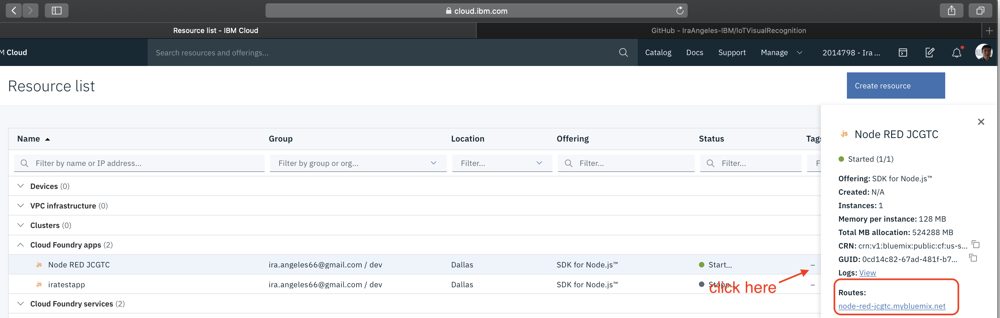
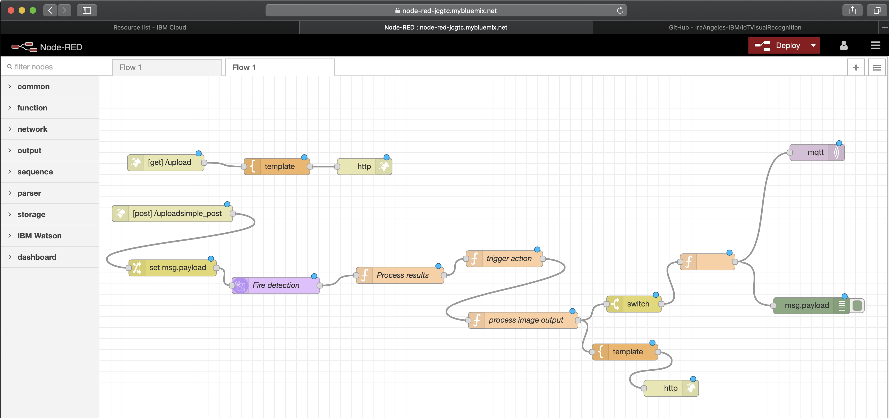

Importing Node-RED flow
-
Open in browser or download flows.json

-
Get the url (Routes) to open the Node-RED application

-
Go to Node-RED Menu and Import option

-
Copy the flows.json contents to the import box and click on Import button

-
The following is shown upon successful import
